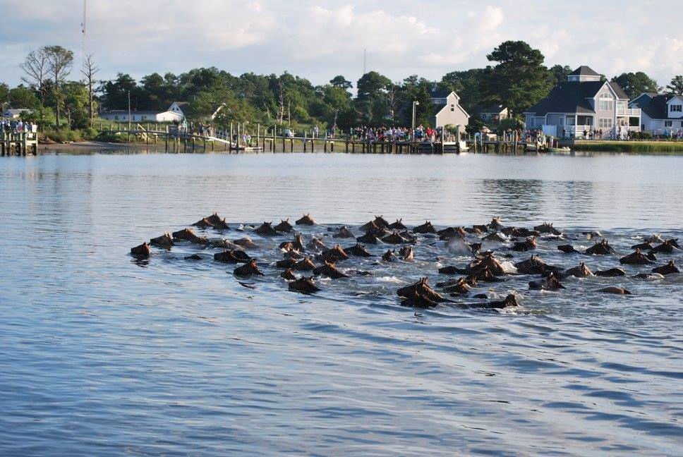
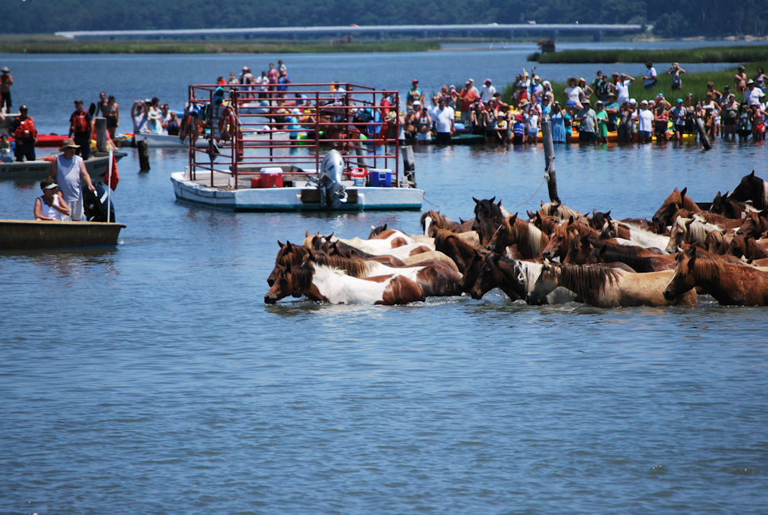
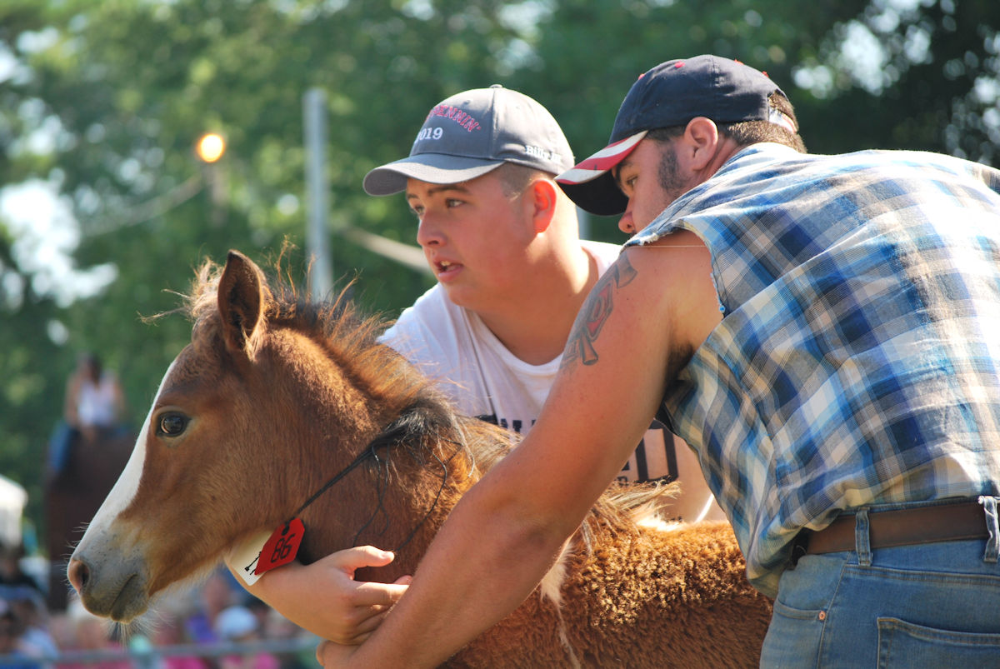

A complete guide to the week long festivities during Chincoteague Island's World Famous Pony Swim!
Wednesday July 29, 2020 will mark the 95th year of Chincoteague's annual Pony Swim.
The Chincoteague Pony Swim was made famous by Marguerite Henry's "Misty of Chincoteague". Tens of thousands of spectators from around the world gather on Chincoteague Island each year to watch this annual tradition. Scroll down for a complete guide to the Chincoteague Pony Swim. For more information about the Chincoteague Ponies, including their history and the origins of the modern day Pony Swim, check out our Chincoteague Pony web page.
The Chincoteague Fireman's Carnival (with rides, games, raffles, and lots of good food) will be open each night (Mon - Sat) during pony penning week beginning at 7pm. Misty of Chincoteague will be showing, at 11:00 am daily, at the Island Theater during pony penning week (Mon - Fri). Admission is free and is first come, first served.
Southern Herd Roundup
The weekend prior to Wednesday's Pony Swim, "Saltwater Cowboys" on horseback will begin to round up the approximately 150 adult wild ponies that live on Assateague Island, along with the 60 to 70 foals that were born in the spring.
About 50 adult ponies and their foals live on the southern end of Assateague Island. The Saltwater Cowboys will begin rounding them up into the Southern Corral Saturday afternoon beginning at about 4:30 pm. The Southern Corral is located on Assateague, just off the road that leads to the beach, and is accessible to the public. The public can view the Ponies in the Southern Corral all day Sunday, Monday, and Tuesday.
Other activities on Chincoteague Island Saturday:
Check our Upcoming Events page for details.
Northern Herd Roundup
About 100 adult ponies and their foals reside a little further north on the Assateague Island, and will be herded into the Northen Corral, Sunday morning beginning at about 7:30 am. The Northern Corral is not accessible to the public during the roundup. However, special bus tours are offered to go the Northern Corral after the roundup. Passengers will be able to get off the bus to view and photograph the Ponies in the Corral. Space is limited and tickets sell out quickly. Call 757-336-3696 for more information about the bus tours or to make a reservation.
Other activities on Chincoteague Island Sunday:
Check our Upcoming Events page for details.
The Beach Walk
On Monday, at day break, the Saltwater Cowboys will move the ponies from the Northern Corral out to the beachfront then south along the Atlantic Ocean, and join them with the ponies in the Southern Corral.
The Chincoteague National Wildlife Refuge will open at 5:00am on this day. To view the Ponies walk down the beach we recommend driving to the beachfront and parking in the recreational beach parking area. Bring snacks, water, bug spray and cameras to enjoy this special event.
Bicyclists and hikers can use Swan Cove Trail to access the beach.
Map Legend:
Other activities on Chincoteague Island Monday:
Check our Upcoming Events page for details.
Pony Vet Checks
All of the Ponies will be checked by a vet and can be viewed by the public in the Southern Corral on Assateague. Park in the Woodland Trail Parking Lot to access the Southern Corral.
Other activities on Chincoteague Island Tuesday:
Check our Upcoming Events page for details.
Pony Swim
On Wednesday, the Saltwater Cowboys will swim the ponies from Assateague Island to Chincoteague Island. The Ponies will swim across the Assateague Channel and come ashore on the east side of Chincoteague Island.
The main public viewing area is Veterans Memorial Park (7427 Memorial Park Dr, Chincoteague Island, VA 23336). A large screen will be located in Veterans Memorial Park with a live feed of the swim. You will be able to see the swim on the screen. No seating is provided.
The Town of Chincoteague provides a free Pony Swim Shuttle service, beginning at 4:00 am. The Pony Shuttle runs between various locations on Chincoteague Island and Veterans Memorial Park. This is the best way to get to and from the Pony Swim.
For details about riding the Pony Shuttle, including a printable map of shuttle stops, please click here. We recommend getting started early on this day and to anticipate a heavy crowd.
All visitors coming in just for the day are encouraged to go to Chincoteague Municipal Center (6155 Community Dr, Chincoteague Island, VA 23336) and catch the free Pony Shuttle. Special needs parking is available at the Chincoteague Municipal Center ONLY.
Note that Veterans Memorial Park is not where the Ponies come ashore. The Ponies come ashore at Pony Swim Lane, just south of Veterans Memorial Park. If you wish to watch the Ponies come ashore at Pony Swim Lane, please be aware that you will be standing in marshland and space is very limited. No seating is provided.
The swim takes place at "slack tide". Slack tide is a period of about 30 minutes between tides, when there is no current. This is the easiest time for the ponies to make the swim. The time of slack tide varies each year. However, the swim generally takes place some time between 7am and 1pm. The specific time will be announced at the carnival grounds the week of the swim.
The best way to see the pony swim up close is on a Charter Boat. However, spots on these boats for the pony swim are in very high demand, so be sure to reserve your spot at least several months in advance.
The first foal to come ashore will be named King or Queen Neptune and will be given away in a raffle drawing at the carnival grounds later in the day (time to be announced). Tickets are sold each night at the carnival and amongst the crowd while waiting for the swim to occur. You must have a ticket and you must be present to win.
Pony Parade To Carnival Grounds
After the swim, the ponies rest for about 45 minutes. Then the Saltwater Cowboys will "parade" the ponies down Main Street, to the carnival grounds where the auction will be held Thursday morning. The parade route is shown in blue on the map below.
Map Legend:
Other activities on Chincoteague Island Wednesday:
Check our Upcoming Events page for details.
Pony Auction
The purpose of the pony swim on Wednesday is to move the ponies from Assateague Island to Chincoteague Island so that the foals can be auctioned. The auction takes place the following day. The auction serves two purposes. First, the auction helps to control the overall size of the herd, keeping it from growing too large. Secondly, the auction is a fundraiser for the Chincoteague Volunteer Fire Company. The Fire Company uses some of the proceeds from the auction to provide veterinary care for the ponies through out the year. Auction winners will receive a certificate saying that they purchased a Chincoteague Pony from the Chincoteague Volunteer Fire Company.
The auction begins at 8 am. The auction is typically very crowded. We suggest you get there early to get a seat.
Each year the Fire Company designates a select few ponies as "Buy Backs". A Buy Back Pony is a foal that is designated by the Fire Company to return to Assateague Island to live out its life there. The Buy Back Pony will be auctioned with the rest of the foals. The winner of a Buy Back Pony will get to name the Pony before it is returned to Assateague. Buy Back Ponies replenish the herd on Assateague. Buy Back Ponies have actually become some of the highest priced ponies sold at the auction.
Proceeds from the sale of one foal annually goes to a regional charity. Past recipients have included Wounded Warriors, Hospice, Palliative Care of the Eastern Shore, and Alzheimer's Adult Care.
Each year the Feather Fund helps deserving children purchase ponies at the auction. The Feather Fund is a charity that was created to honor the memory of Carollynn Suplee, a woman who came to Chincoteague annually to help children buy ponies at the auction until she passed away from cancer in 2003. To learn more visit www.featherfund.org.
For more information about the auction, including tips for bidding and auction price history, please click here.
Other activities on Chincoteague Island Thursday:
Check our Upcoming Events page for details.
The Pony Swim Back to Assateague
On Friday, the adult ponies will make the return swim to Assateague Island where they will live in the wild for another year.
Other activities on Chincoteague Island Friday:
Check our Upcoming Events page for details.